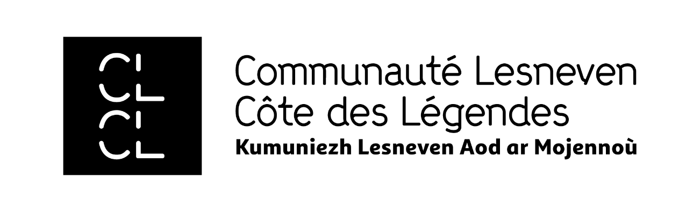

Et pour vous,
qu'est-ce que cette carte
ne montre pas encore ?
Et pour vous,
qu'est-ce que cette carte
ne montre pas encore ?
CE PROJET A ÉTÉ MENÉ DANS LE CADRE D'UN DIPLÔME EN DESIGN GRAPHIQUE SOCIAL ET ÉTHIQUE, AU CAMPUS FONDERIE DE L'IMAGE DE BAGNOLET (93170), PAR UNE ÉLÈVE ORIGINAIRE DU TERRITOIRE (29260).
NÉ DE DISCUSSIONS, DE RENCONTRES ET DE COLLECTES DE RÉCITS MENÉS AUPRÈS DES HABITANT·ES DE LA COMMUNAUTÉ DE COMMUNES LESNEVEN CÔTE DES LÉGENDES.
AVEC LE SOUTIEN DE LA COMMUNAUTÉ LESNEVEN CÔTE DES LÉGENDES ET DU PROJET FABRIQUE IMAGINAIRE.
MERCI À TOUTES LES PERSONNES QUI ONT OU PRENDRONS PART À CE PROJET.
Concept, direction artistique & développement
© eloïse corlosquet — Juin, 2026
Font Résistance © students of ENSAD Paris La Générale
Font Self Modern © Bretagne Type Foundry


Les commun·es vécu·es est une cartographie sensible et contributive du territoire de la Communauté de communes Lesneven Côte des Légendes. Elle est composée de récits, de souvenirs, d'attachements, de lieux discrets et de traditions partagées : donnant à voir ce qui structure vraiment la vie dans nos territoires.
Chaque récit déposé sur cette carte est un fragment du territoire tel qu'il est vécu, ressenti, habité. Ensemble, ils dessinent ce que les cartes ne montrent pas.
Contribuez.
Racontez.
Cette carte est une ouverture.
Elle est née d'un constat : les représentations officielles du territoire ne racontent pas la vie telle qu'elle est construite.
Elles montrent les routes. Pas les liens.
Elles montrent les équipements. Pas les rituels.
Elles montrent les frontières. Pas les appartenances.
Cette carte a été conçue pour être un espace de parole commun, un support où chacun·e peut déposer son expérience du territoire, et découvrir celle des autres.
« Selon certain·es, d'après quelques uns et d'autres encore »
Filloque & Zammit & CieCette carte est désormais la vôtre.
Carte générée le :
Archive du territoire à cet instant. Cette version reflète les récits déposés jusqu'à aujourd'hui, chaque impression est une lecture personnelle.
La carte continue de grandir avec vos voix, vos endroits, vos souvenirs.
Choisissez ce que vous voulez voir apparaître sur votre carte imprimée :
Votre récit est sur la carte.
Merci d'avoir contribué.